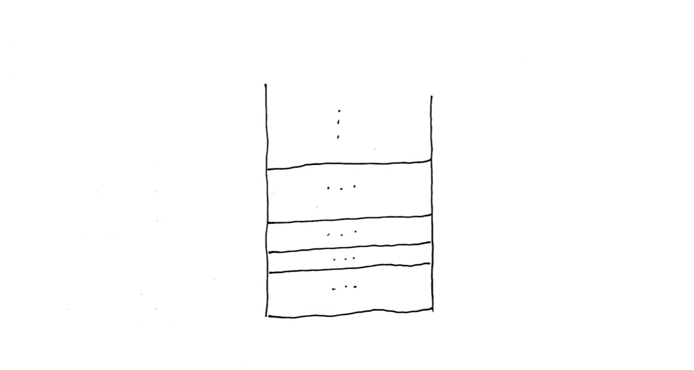

2
Call stack
In the previous, we have come up a recursive algorithm for adding numbers. I hope you don't feel redundant to apply recursion to a problem this trivial. But I'll assure you sum is such a fundamental problem in the course of studying recursion that it can only help you understand the recursion better. Before we move on to solve other problems, this chapter will turn to a topic about a potential bug in our code.
I'm sure you have tried to run sum for different n. Have you tried sum(10000)?
Maximum call stack size exceeded VM327:2
sum @ VM327:2
sum @ VM327:3
sum @ VM327:3
sum @ VM327:3
.
.
.
If you have tried, I have to admit that I lied, sum code actually doesn't work for that n or above, because most likely you ended up a message like above.
How so? What's the message about? Why it works for sum(9000) but not sum(10000)? What's so special about 10000? Lots of questions.
Drilling down the message, it shows that our code calls sum, and then calls sum and then calls sum ... And then, there's no then. So 9000 times didn't break it, but 10000 times broke it. Hmm?!
Pretty much that is what happened. Only a minor detail, it's less about the exact number 10000, but more about something called the "Maximum call stack size" from your running environment.
Everyone's running environment could be different. We can differ by operation systems, nodejs runtime versions and etc.
What is call stack?

Fig. Call stack
The call stack is a container for function calls. When a function is called, it'll be added to this list. This is for the computer to keep track of how many calls currently are running in your language environment.
When a function is invoked, the call stack needs to allocate memory for the function instance, to store local variables as well as to remember where it returns to when it finishes. Thus you can see there's an overhead of calling a function.
Functions call and return. Transparent to us, the call stack runs behind the scene most of time. But sometimes when you write a bug, such as calling functions in a faster rate than finishing them, the computer has to allocate more and more memory, until the point it can't allocate anymore. This is when the "Maximum call stack size" is reached. The size here refers to the memory size instead of instances count.
Back to our sum case, it calls sum(n) first, and then n-1 till 0, each time when it calls, it does not get chance to close the previous call because the previous call is waiting the new call to finish first. Thus the active function instances keep incrementing until it reaches somewhere around 10000, it exceeds the max memory that the call stack can allocate.
Bummer!
So how do we get around of this issue so that we can run sum(10000)? There are couple of options.
Live with it
The option sounds like not an option.
Most of us live with the call stack peacefully.
10000 calls is a lot of calls. This number doesn't mean we only can call 10000 functions in our program. This number stands for that, you can't have 10000 active functions running at the same time. For instance, you can call some functions, finish some functions and then call another bunch of functions. This turns out to be the most calling pattern.
If you really really want to make more calls, there's still ways. Your language sometimes open a way for us to change this limit temporarily. For JavaScript, we can play with the stack-size setting.
Save sum function into sum.js file.
function sum(n) {
if (n == 0) return 0;
return sum(n - 1) + n;
}
console.log(sum(10000));Now we can run it in the terminal.
> node --stack-size=900 sum.js
Maximum call stack size exceeded
> node --stack-size=1000 sum.js
50005000
Using the stack-size flag, we can get it working. It's not convenient, not to mention it takes some trial-and-error to find out the right stack size for your problem.
Luckily, other than playing with the environnement setting, we have other ways addressing this issue.
Iterative setup
We have been using recursive function calls. But we can also implement the recursion with the iterative setup. Or sometimes when we finish a recursive, we convert it by eliminating recursive calls.
For example, we could write our sum algorithm in an iterative way.
function sum(n)
{
let res = 0;
for (let i = 0; i <= n; i++) {
res = res + i
}
return res;
}
I know what you’re gonna say. It’s basically the classical for approach. Well, I admit it, but for this simple problem, it just happens that the converted version is identical to the iterative version. This isn't an coincidence that they look the same. For this problem, there's only one way to go through the array iteratively.
Not all recursion can be converted this easy. Some are easy, and some can be really tricky to write. And I can assure you that the converted version can look a bit different to the iterative style. Because the conversion also try hard to keep the recursive signature of the problem. We only want to get around the stack limit issue, but we still want to use the recursion approach.
With the converted version, we can now call it with larger number without worrying about running into error.
> sum(10000)
50005000
> sum(100000)
5000050000
> sum(1000000)
500000500000
> sum(10000000)
50000005000000
> sum(100000000)
5000000050000000
> sum(1000000000)
50000000006710900
Haskell language
There're other options. If your language doesn't work, maybe try other languages.
Recursion normally isn’t a language feature, it’s more like a by-product of a language. It doesn't get enough attention by the main stream languages usually. However, there exits language that does build on top of the recursion mindset, such as Haskell.
Haskell is an advanced, purely functional programming language.
It’s hard to miss this language if you are fan of recursion, because Haskell fully appreciates the power of recursion at its core. Using it to write recursion is like writing down our thoughts. Say we write the sum in recursion in Haskell.
sum 0 = 0
sum n = sum (n-1) + n
The syntax of Haskell function can be strange to some of us initially since its argument is not wrapped within a bracket. Instead it uses a space to separate the function name and its argument.
Our Haskell version has two lines, and looks quite similar to the specification than the code. Yeah, but that's the code.
Run it and let's see the result.
> sum 10000
50005000
> sum 100000
5000050000
> sum 1000000
500000500000
> sum 10000000
50000005000000
> sum 100000000
5000000050000000
> sum 1000000000
500000000500000000
The Haskell version works with large recursion levels out of the box. It only has a max call stack size, but its size is set to be relatively high by default.
You might be like, if Haskell is that easy, why don’t we just start with Haskell, well, as I mentioned, writing in Haskell is like writing your thoughts, and sometimes it’s difficult to write down your thoughts, it takes some skill and practice to get there.
This book isn't about teaching you how to write down your thought, maybe it is, but we’ll focus on the recursion, so we use Haskell version as a reference to confirm our design and check results, more to use Haskell as a helper. It's good to be sure we are right!